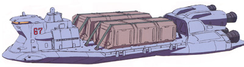
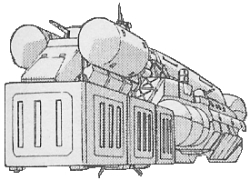

| Cargo Transport Craft |
|
|  | |
General and Technical Data |
|
|
Unit Type: space cargo ferry Operator: Colony Management Core, Earth Federation Propulsion system: 4x rocket thruster Hangar capacity: 2 cargo, 2 mobile suits or 3 infantry Launch catapults: 0 Fixed armaments: none Technical and Historical Notes A small bulk transport craft used by both the Colony Management Corporation and the Earth Federation, the aptly dubbed "Cargo Transport Craft" has roughly five times the cargo capacity of your average shuttle, while maintaining similar maneuverability and speed. Like with most civilian vessels, it is unarmed. |
 RPG quick stats sheet
RPG quick stats sheet